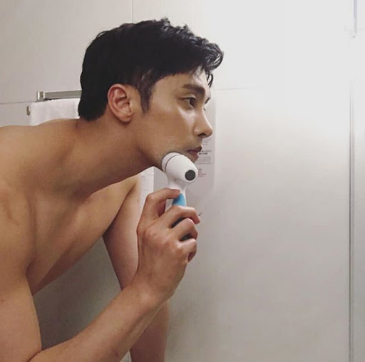

연예계 데뷔 전에는 수영선수로 활동하다 부상으로 그만두고[5][6] 2009년, 화이트 브라운의 사랑하기 때문에로 데뷔했다. 처음으로 본 오디션에서 합격한 거라 본인도 많이 놀랐다고 한다. 하지만 사진에서도 보다시피, 마스크나 신체조건이 상당히 우월한 편이라, 붙을 만했다는 의견이 많았다. 또한 임성한 작가는 남자 주연 배우로 주로 신인 혹은 무명을 발탁하는 것으로 알려져 있다. 첫 작품을 끝낸 뒤 조연부터 차근차근 시작하고 싶다는 생각에 다음 작품인 《신의》에서는 주인공 일행의 적인 천음자로 출연했다. 다음 작품인 《가족의 탄생》에서는 드라마 중반부에 투입이 됐는데, 여주인공을 두고 남주인공과 대립하는 서브남주의 위치였지만, 마지막엔 주인공을 밀어내고 진 주인공으로 등극했다(!) 배우 본인이 연기한 작품들에서 거의 다 주연을 맡았다. [7] 참고로 예체능에서의 돌고래로 빙의한 듯한 활약 덕분에 수영 레슨 문의가 많이 들어온다고 한다. 연예인은 부업으로 참고로 인터뷰에서 밝혀진 바에 따르면, 본인은 운동을 싫어하는 듯. 수영선수 & 강사 경력[8] 덕분인지, 예체능이나 각종 인터뷰에서 말을 상당히 조리 있게 잘하는 편이다. 예체능에서도 수영에 관한 정보를 전달할 때나 멤버들의 훈련을 도와줄 때의 모습을 보면 긴 설명도 막힘없이 자연스럽게 술술 하는 등 말재주가 좋은 듯. 2017년 7월 7일 방영분 나 혼자 산다 무지개 라이브에 출연했다. 자취 생활은 말 그대로...건어물남. 하는 게임은 배틀그라운드, 그리고 오덕 기질이 보이는데, 인터뷰 영상을 보면 토니토니 쵸파 일러스트와 퍼즐, 케로로봇 프라모델, 진격의 거인 일러스트, 로이 머스탱 피규어[9] 등이 내비쳤다. 나 혼자 산다 인터뷰에서 본인은 관심도 없었는데 팬미팅 때 원피스라는 애니가 좋다고 한 적이 있는데 그후 팬들이 퍼즐, 장난감을 보내줬다고 말했다. 즉 본인이 산 게 아니라 팬의 선물인 것. 방송 보신 분들은 앞으로 호랑이 기운 씨리얼을 보내줄 듯 이후로도 해당 방송에 수차례 출연하였으며 그 때마다 그의 굉장한 먹성이 화제가 되었다. 선수 출신 답게 압도적인 기세로 엄청난 양을 단 시간 내 먹어치운다. 다른 고정 멤버들에 비하여 출연 빈도가 높지 않음에도 화제성이 높은 것은 모두 이 때문. 덕분에 함께 출연한 양치승 트레이너까지 세간의 관심을 모으고 있다. 이후 고정회원이 되면서 겉모습은 화려한데 허당인 모습까지 보여주면서, 최근 2019년에는 뉴얼의 망가지고 허술한 캐릭까지 보여주는 솔직한 모습을 보여주고 있어 큰 사랑을 받고 있는데, 덕분에 연말 예능대상에서 18년에는 베스트 엔터테이너상을, 19년에는 우수상까지 수상했다. 아내 이름은 [백규원] 이다.
 For creating web pages and web applications.